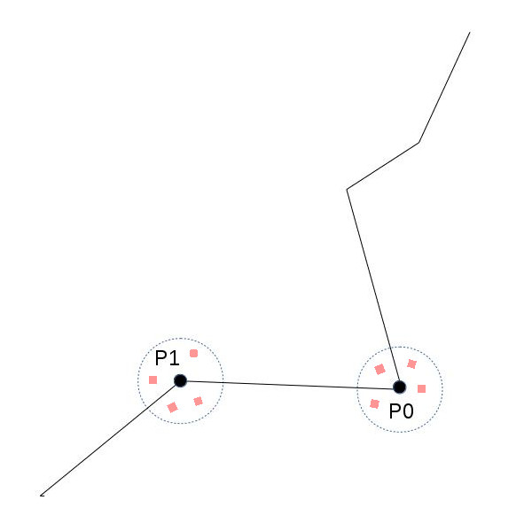
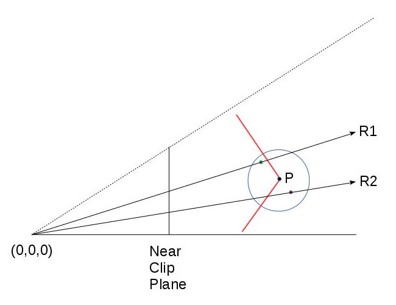

Credits: SSAO tutorial by John Chapman
Background
Do you remember how our lighting model began evolving? Back in tutorial 17 we took a first look at the lighting model, starting with the ambient lighting type. The ambient lighting which is supposed to mimic the general feeling of "everything is bright" that you get in a highly lit, mid-day environment, was implemented using a single floating point value that was attached to each lighting source and we multiplied that value by the color of the surface which we sampled from the texture bound to that surface. So you could have a single light source in your scene called "sun" and you could play with the ambient light to control how well the scene was generally lit - values closer to zero produced a darker scene while values closer to 1 produced a lighter scene.
In the following tutorials we implemented diffuse and specular lighting which contributed to the overall quality of the scene but the basic ambient light remained the same. In the recent years we see a rise of what is known as Ambient Occlusion which basically means that instead of going with a fixed ambient light value for each pixel we can calculate how much the pixel is exposed to the ambient light source. A pixel on the floor in the middle of room is much more exposed to the light than, say, a pixel in the corner. This means that the corner will be a bit darker than the rest of the floor. This is the core of ambient occlusion. So in order to implement it we need to find a way to differentiate between those "tightly packed in corners pixels" vs. "out in the open pixels". The product of this calculation is an ambient occlusion term which will control the ambient light in the final lighting stage. Here's a visualization of this ambient occlusion term:

You can see how the edges are the brightest and the corners where we expect to get the smaller amount of lighting are much darker.
There is a lot of research on the subject of ambient occlusion and many algorithms have been developed to approximate it. We are going to study a branch of these algorithms known as Screen Space Ambient Occlusion or SSAO, which was developed by Crytek and became highly popular with their 2007 release of Crysis. Many games have since implemented SSAO and a lot of variations were created on top of it. We are going to study a simplified version of the algorithm based on a SSAO tutorial by John Chapman.
Ambient occlusion can be very compute intensive. Crytek came up with a good compromise where the occlusion term is calculated once per pixel. Hence the prefix 'Screen Space' to the algorithm name. The idea was to go over the window pixel by pixel, extract the view space position in that location, sample a few random points very near that position and check whether they fall inside or outside the real geometry in that area. If many points fall inside the geometry it means the original pixel is cornered by many polygons and receives less light. If many points are outside of any geometry it means the original pixel is "highly exposed" and therefore receives more light. For example, take a look at the following image:
We have a surface with two points on it - P0 and P1. Assume that we are looking at it from somewhere on the upper left corner of the image. We sample a few points around each point and check whether they fall inside or outside the geometry. In the case of P0 there is a greater chance that random points around it will fall inside the geometry. For P1 it is the opposite. Therefore we expect to get a greater ambient occlusion term for P1 which means it will look lighter in the final frame.
Let's take it to the next level of details. We are going to plug in an ambient occlusion pass somewhere before our standard lighting pass (we will need the ambient term for the lighting). This ambient occlusion pass will be a standard full screen quad pass where the calculation is done once per pixel. For every pixel we will need its view space position and we want to generate a few random points in close vicinity to that position. The easiest way will be to have a texture ready at the point fully populated with the view space positions of the entire scene geometry (obviously - only of the closest pixels). For this we will need a geometry pass before the ambient pass where something very similar to the gbuffer that we saw in deferred rendering will be filled with view space position information (and that's it - we don't need normals, color, etc). So now getting the view space position for the current pixel in the ambient pass is just one sample operation away.
So now we are in a fragment shader holding the view space position for the current pixel. Generating random points around it is very easy. We will pass into the shader an array of random vectors (as uniform variables) and add each one to the view space position. For every generated point we want to check whether it lies inside or outside the geometry. Remember that these points are virtual, so no match to the actual surface is expected. We are going to do something very similar to what we did in shadow mapping. Compare the Z value of the random point to the Z value of the closest point in the actual geometry. Naturally, that actual geometry point must lie on the ray that goes from the camera to the virtual point. Take a look at the following diagram:
Point P lies on the red surface and the red and green points were generated randomly around it. The green point lies outside (before) the geometry and the red is inside (thus contributes to the ambient occlusion). The circle represents the radius in which random points are generated (we don't want them to be too far off point P). R1 and R2 are the rays from the camera (at 0,0,0) to the red and green points. They intersect the geometry somewhere. In order to calculate the ambient occlusion we must compare the Z values of the red and green points vs the Z value of the corresponding geometry points that are formed by the intersection of R1/R2 and the surface. We already have the Z value of the red and green points (in view space; after all - this is how we created them). But where's the Z value of the points formed by the above intersection?
Well, there's more than one solution to that question but since we already have a texture ready with the view space position of the entire scene the simplest way will be to find it somehow in it. To do that we will need the two texture coordinates that will sample the view space position for the R1 and R2 rays. Remember that the original texture coordinates that were used to find the view space position of P are not what we need. These coordinates were formed based on the interpolation of the full screen quad that we are scanning in that pass. But R1 and R2 don't intersect P. They intersect the surface somewhere else.
Now we need to do a quick refresher on the way the texture with the view space positions was originally created. After transforming the object space coordinates to view space the resulting vectors were multiplied by the projection matrix (in fact - all these transformation were performed by a single matrix). All this happened in the vertex shader and on the way to the fragment shader the GPU automatically performed perspective divide to complete the projection. This projection placed the view space position on the near clipping plane and the points inside the frustum have a (-1,1) range for their XYZ components. As the view space position was written out to the texture in the fragment shader (the above calculation is performed only on gl_Position; the data written to the texture is forwarded in a different variable) the XY were transformed to the (0,1) range and the results are the texture coordinates where the view space position is going to be written.
So can we use the same procedure in order to calculate the texture coordinates for the red and green points? Well, why not? The math is the same. All we need to do is provide the shader with the projection matrix and use it to project the red and green points on the near clipping plane. We will need to perform the perspective divide manually but that's a no-brainer. Next we will need to transform the result to the (0,1) and here's our texture coordinate! We are now just a sample away from getting the missing Z value and checking whether the virtual point that we generated is located inside or outside the geometry. Now let's see the code.
Source walkthru
(tutorial45.cpp:156)
virtual void RenderSceneCB()
{
m_pGameCamera->OnRender();
m_pipeline.SetCamera(*m_pGameCamera);
GeometryPass();
SSAOPass();
BlurPass();
LightingPass();
RenderFPS();
CalcFPS();
OgldevBackendSwapBuffers();
}
We will start the source walkthru from the top level and work our way down. This is the main render loop and in addition to the three passes that we discussed in the background section there's also a blur pass whose job is to apply a blur kernel on the ambient occlusion map formed by the SSAO pass. This helps smooth things up a bit and is not part of the core algorithm. It's up to you to decide whether to include it or not in your engine.
(tutorial45.cpp:177)
void GeometryPass()
{
m_geomPassTech.Enable();
m_gBuffer.BindForWriting();
glClear(GL_COLOR_BUFFER_BIT | GL_DEPTH_BUFFER_BIT);
m_pipeline.Orient(m_mesh.GetOrientation());
m_geomPassTech.SetWVP(m_pipeline.GetWVPTrans());
m_geomPassTech.SetWVMatrix(m_pipeline.GetWVTrans());
m_mesh.Render();
}
In the geometry pass we render the entire scene into a texture. In this example there's only one mesh. In the real world there will probably be many meshes.
(geometry_pass.vs)
#version 330
layout (location = 0) in vec3 Position;
uniform mat4 gWVP;
uniform mat4 gWV;
out vec3 ViewPos;
void main()
{
gl_Position = gWVP * vec4(Position, 1.0);
ViewPos = (gWV * vec4(Position, 1.0)).xyz;
}
(geometry_pass.fs)
#version 330
in vec3 ViewPos;
layout (location = 0) out vec3 PosOut;
void main()
{
PosOut = ViewPos;
}
These are the vertex and fragment shaders of the geometry pass. In the vertex shader we calculate the gl_position as usual and we pass the view space position to the fragment shader in a separate variable. Remember that there is no perspective divide for this variable but it is a subject to the regular interpolations performed during rasterization.
In the fragment shader we write the interpolated view space position to the texture. That's it.
(tutorial45.cpp:192)
void SSAOPass()
{
m_SSAOTech.Enable();
m_SSAOTech.BindPositionBuffer(m_gBuffer);
m_aoBuffer.BindForWriting();
glClear(GL_COLOR_BUFFER_BIT);
m_quad.Render();
}
This is the application code of the SSAO pass and it is very simple. On the input side we have the view space position from the previous pass and we write the output to an AO buffer. For the rendering we use a full screen quad. This will generate the AO term for every pixel. The real meat is in the shaders.
(ssao.vs)
#version 330
layout (location = 0) in vec3 Position;
out vec2 TexCoord;
void main()
{
gl_Position = vec4(Position, 1.0);
TexCoord = (Position.xy + vec2(1.0)) / 2.0;
}
As in many screen space based techniques in the vertex shader we just need to pass-thru the position of the full screen quad. gl_Position will be consumed by the GPU for the purposes of rasterization but we use it's XY components for the texture coordinates. Remember that the full screen quad coordinates range from (-1,-1) to (1,1) so everything in the fragment shader will be interpolated in that range. We want our texture coordinates to be in the (0,1) so we transform it here before sending it out to the fragment shader.
(ssao.fs)
#version 330
in vec2 TexCoord;
out vec4 FragColor;
uniform sampler2D gPositionMap;
uniform float gSampleRad;
uniform mat4 gProj;
const int MAX_KERNEL_SIZE = 128;
uniform vec3 gKernel[MAX_KERNEL_SIZE];
void main()
{
vec3 Pos = texture(gPositionMap, TexCoord).xyz;
float AO = 0.0;
for (int i = 0 ; i < MAX_KERNEL_SIZE ; i++) {
vec3 samplePos = Pos + gKernel[i]; // generate a random point
vec4 offset = vec4(samplePos, 1.0); // make it a 4-vector
offset = gProj * offset; // project on the near clipping plane
offset.xy /= offset.w; // perform perspective divide
offset.xy = offset.xy * 0.5 + vec2(0.5); // transform to (0,1) range
float sampleDepth = texture(gPositionMap, offset.xy).b;
if (abs(Pos.z - sampleDepth) < gSampleRad) {
AO += step(sampleDepth,samplePos.z);
}
}
AO = 1.0 - AO/128.0;
FragColor = vec4(pow(AO, 2.0));
}
Here's the core of the SSAO algorithm. We take the texture coordinates we got from the vertex shader and sample the position map to fetch our view space position. Next we enter a loop and start generating random points. This is done using an array of uniform vectors (gKernel). This array is populated by random vectors in the (-1,1) range in the ssao_technique.cpp file (which I haven't included here because it's pretty standard; check the code for more details). We now need to find the texture coordinates that will fetch the Z value for the geometry point that matches the current random point. We project the random point from view space on the near clipping plane using the projection matrix, perform perspective divide on it and transform it to the (0,1) range. We can now use it to sample the view space position of the actual geometry and compare its Z value to the random point. But before we do that we make sure that the distance between the origin point and the one whose Z value we just fetched is not too far off. This helps us avoid all kinds of nasty artifacts. You can play with the gSampleRad variable for that.
Next we compare the depth of the virtual point with the one from the actual geometry. The GLSL step(x,y) function returns 0 if y < x and 1 otherwise. This means that the local variable AO increases as more points end up behind the geometry. We plan to multiply the result by the color of the lighted pixel so we do a 'AO = 1.0 - AO/128.0' to kind-of reverse it. The result is written to the output buffer. Note that we take the AO to the power of 2 before writing it out. This simply makes it look a bit better in my opinion. This is another artist variable you may want to play with in your engine.
(tutorial45.cpp:205)
void BlurPass()
{
m_blurTech.Enable();
m_blurTech.BindInputBuffer(m_aoBuffer);
m_blurBuffer.BindForWriting();
glClear(GL_COLOR_BUFFER_BIT);
m_quad.Render();
}
The application code of the blur pass is identical to the SSAO pass. Here the input is the ambient occlusionn term we just calculated and the output is a buffer containing the blurred results.
(blur.vs)
#version 330
layout (location = 0) in vec3 Position;
out vec2 TexCoord;
void main()
{
gl_Position = vec4(Position, 1.0);
TexCoord = (Position.xy + vec2(1.0)) / 2.0;
}
(blur.fs)
#version 330
in vec2 TexCoord;
out vec4 FragColor;
uniform sampler2D gColorMap;
float Offsets[4] = float[]( -1.5, -0.5, 0.5, 1.5 );
void main()
{
vec3 Color = vec3(0.0, 0.0, 0.0);
for (int i = 0 ; i < 4 ; i++) {
for (int j = 0 ; j < 4 ; j++) {
vec2 tc = TexCoord;
tc.x = TexCoord.x + Offsets[j] / textureSize(gColorMap, 0).x;
tc.y = TexCoord.y + Offsets[i] / textureSize(gColorMap, 0).y;
Color += texture(gColorMap, tc).xyz;
}
}
Color /= 16.0;
FragColor = vec4(Color, 1.0);
}
This is an example of a very simple blur technique. The VS is actually identical to the one from the SSAO. In the fragment shader we sample 16 points around the origin and average them out.
(tutorial45.cpp:219)
void LightingPass()
{
m_lightingTech.Enable();
m_lightingTech.SetShaderType(m_shaderType);
m_lightingTech.BindAOBuffer(m_blurBuffer);
glBindFramebuffer(GL_FRAMEBUFFER, 0);
glClear(GL_COLOR_BUFFER_BIT | GL_DEPTH_BUFFER_BIT);
m_pipeline.Orient(m_mesh.GetOrientation());
m_lightingTech.SetWVP(m_pipeline.GetWVPTrans());
m_lightingTech.SetWorldMatrix(m_pipeline.GetWorldTrans());
m_mesh.Render();
}
We have a pretty standard application code for the lighting pass. The only addition here is the blurred AO term buffer which is bound as input.
(lighting.fs)
vec2 CalcScreenTexCoord()
{
return gl_FragCoord.xy / gScreenSize;
}
vec4 CalcLightInternal(BaseLight Light, vec3 LightDirection, vec3 Normal)
{
vec4 AmbientColor = vec4(Light.Color * Light.AmbientIntensity, 1.0f);
if (gShaderType == SHADER_TYPE_SSAO) {
AmbientColor *= texture(gAOMap, CalcScreenTexCoord()).r;
}
...
I haven't included the entire lighting shader since the change is very minor. The ambient color is modulated by the ambient occlusion term sampled from the AO map for the current pixel. Since we are rendering the actual geometry here and not a full screen quad we have to calculate the texture coordinates using the system maintained gl_FragCoord. gShaderType is a user controlled variable that helps us switch from SSAO to no-SSAO and only-ambient-occlusion-term display. Play with the 'a' key to see how it goes.